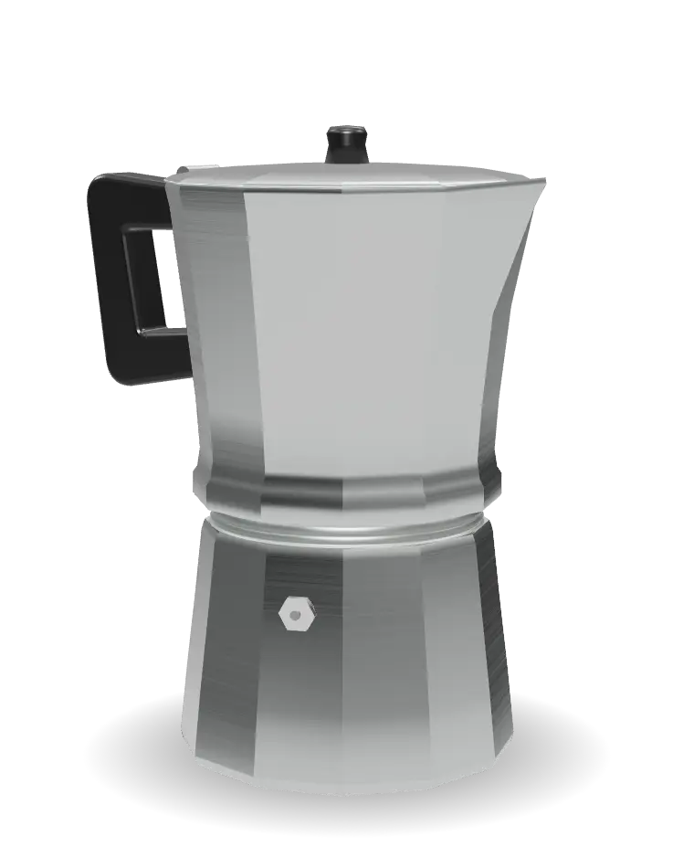
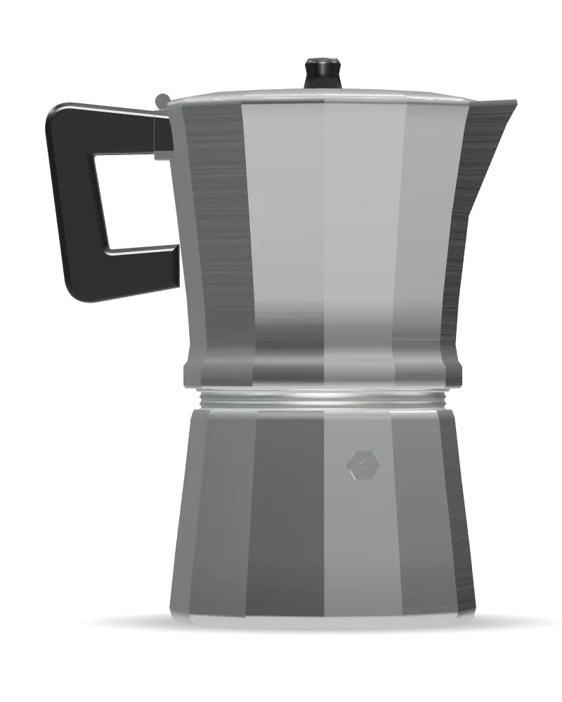
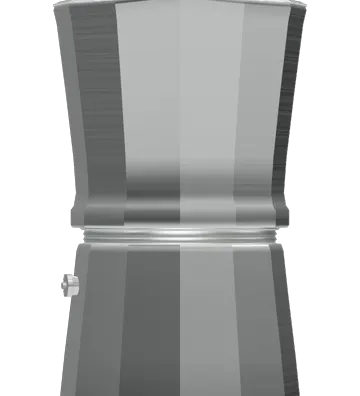
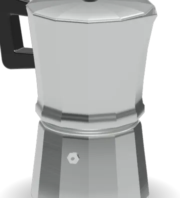
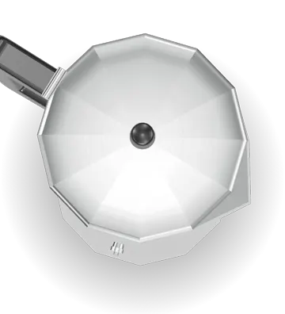

Fervo 3 cafeteira de pressão · aço inox · 12 faces
A água sobe.

Uma cafeteira de fogão que você entende olhando: a água sobe da caldeira, atravessa o café e chega pronta em cima. Role e veja por dentro.
- Capacidade
- 3 xícaras · 150 ml
- Corpo
- inox 18/10, 12 faces
- Fogão
- gás, elétrico e indução
Por dentro · 4 peças, um caminho
De baixo para cima, como a água.
-
01 · caldeira150ml
A água espera abaixo da válvula.
Água fria até a linha da válvula de segurança, nunca acima. Se a pressão passar do ponto, é por ela que o vapor sai.
-
02 · funil15g
O vapor empurra a água pelo tubo.
No fogo, o ar e o vapor acima da água ganham pressão e empurram a água pelo tubo do funil até o café: moagem média-fina, nivelado, sem socar.
-
03 · filtro e junta0,6mm
A placa segura o pó. A junta segura a pressão.
Placa de inox com furos de 0,6 mm e anel de silicone alimentar: o café passa, o pó fica, e nada vaza pela rosca.
-
04 · coletor3×50 ml
O café chega por cima, pela chaminé.
Ele sobe pela chaminé central e cai no coletor. Quando o som virar um borbulhar baixo, tire do fogo: o resto da água fica na caldeira, e o amargo também.


frente
3/4
topo
Ficha · primeira fornada
Montada, ela mede 17,5 cm.
- Capacidade
- 150 ml de água · 3 xícaras de 50 ml
- Café
- 15 g, moagem média-fina
- Corpo
- aço inox 18/10, 12 faces escovadas
- Fundo
- inox 430 encapsulado: gás, elétrico, vitrocerâmico e indução
- Alça e pegador
- baquelite, não esquentam na mão
- Junta e filtro
- silicone alimentar e placa de inox, substituíveis
- Peso
- ≈ 720 g
Produto em desenvolvimento: medidas e materiais desta ficha podem mudar até a produção.